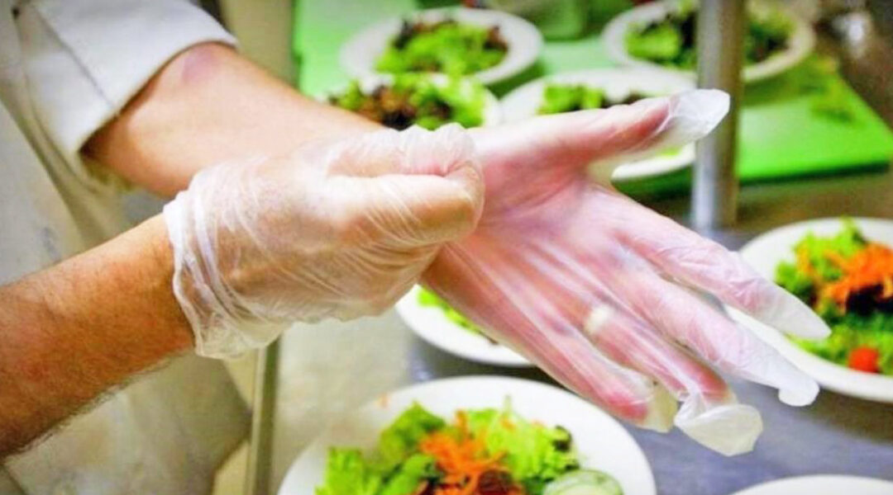
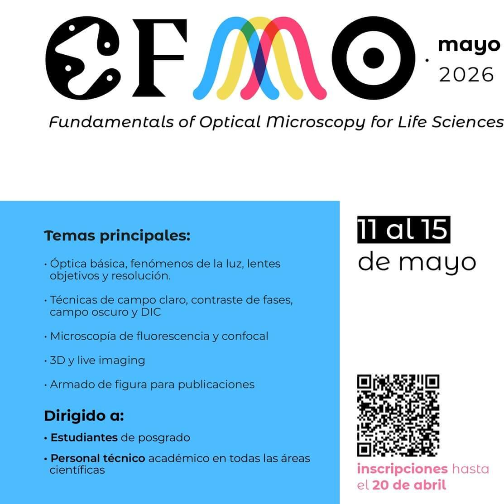

Proyectos:
Curso en manipulacion de alimentos.

Categoria: Dictado por una Comicion Estudiantil
Con la finalidad de ayudar a los jovenes emprededores de nuestra institución, se dictaran cursos en manipulacion de alimentos dirigidos por los especialistas Armando Esteban y Geronimo Sorbas.
Ver detalle.Formacion integral del lider y estrategias de conduccion consciente.
Categoria: Dictado por una Comicion Estudiantil
Para alumnos de la institucion que cursen el cuarto año de alguna carrera de grado. Sera dictadio el siguiente curso con la finalidad de brindarles herramientas y estrategias para que el cursante desarrolle un correcto rol como lider, independientemente de su entorno laboral.
Ver detalle.Diplomatura Universitaria en Inteligenci Artifical.
Categoria: Dictado por la facultad
Se dictara el siguiente curso con el obgetivo de brindarle al cursante la capasidad de integrar a la IA en entornos a nivel profecional.
Ver detalle.Taller de "Ingenieria Emocional"
Categoria: Dictado por la facultad
Se convoca a los alumnos de la institucion para formar parte de este espacio el cual tiene como finalidad indagar en las expectativas idealizadas sober la universidad y la posible frustracion que con lleva,la sensacion de desborde, la autoexigencia, la ansiedad, entre otras problematicas.
Ver detalle.CFMO Curso de posgrado

Categoria: Dictado por la facultad
Dictado en colaboracion con la Dra. Claire Brown y con la finalidad de comprender los fundamentos de la microscopia optica se dictara el siguinte curso en la Facultad de Ingenieria
Ver detalles.